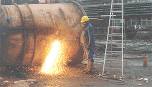

Beim Schweißen und Schneiden können spezielle Gefahren und Gefährdungen entstehen. Deswegen sind beim Schweißen eine Reihe von Verhaltenshinweisen zu beachten, persönliche Schutzausrüstungen zu benutzen und Maßnahmen zum Brandschutz vorzusehen.
Es wird unterschieden zwischen